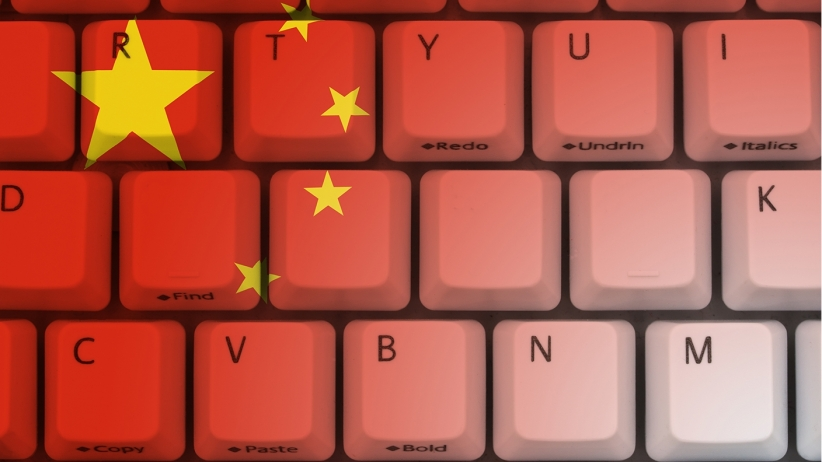

The Least Free Internets on the Globe: Now and in the Future
With internet freedom for citizens generally on the decline, it is important to look at what the most extreme cases of internet freedom declines are in the world. These examples serve as examples of what could happen in the future at large if the decline of internet freedom continues to happen on a global scale without regulation.
China is a notorious example of internet censorship. Freedom House in 2018 reports that China was the worst abuser of internet freedom from 2014-2018. The country has been known to block access to many foreign websites, such as Google, Facebook, Twitter, and Instagram. In June of 2017, China passed a new cybersecurity law that increases censorship requirements, mandating data localization, codifying real-name registration requirements for internet companies, and obliging them to assist security agencies with investigations. If domestic companies did not comply with the new regulations immediately, they were penalized or were shut down. As a result, over 3,000 websites were shut down or had their licenses revoked in 2018. Foreign tech companies also began to adhere to the new restrictions. Apple in 2017 removed hundreds of VPNs from its online app store to comply with new bans on circumvention tools. Censorship tightened again in October 2017 before the 19th Communist Party Congress convened. Freedom House explains that officials used this time as a propaganda period and thus suppressed competing content from foreign countries such as Saturday Night Live.
Other countries have followed China's approach to internet freedom. The BBC reports in August 2018 that Egyptian president Abdel Fattah al-Sisi signed a law on cybercrime allowing Egypt if deemed to constitute a threat to national security or the economy. Anyone found running or visiting a site under these criteria could face fines or prison time. The Human Rights Watch in July 2018 found that this legislation was being used to unjustly prosecute journalists, activists, and critics for their peaceful criticism. Many other countries such as Sri Lanka, Venezuela, and Kenya, have enacted similar policies to censor the internet for their citizens.
Smith reports that Russia is establishing a “Digital Economy National Program” which calls on Russia to develop its own form of DNS. Smith from PCMag in February 2019 states that the intention of this is to seal Russia off from incoming cyber attacks by re-routing web traffic in Russia to exchange points controlled by Russia’s telecom agency. However, there are fears on how this program will affect the freedom of information for the common citizen. With all internet traffic flowing through its private network, Russia could create a system like China where popular websites are banned, and internet use is heavily monitored.
These anecdotes alone show the dangers of the status quo where the internet is regulated on a state level. Governments can enact policies that are corrupt and limit the flow of information to citizens for state gain. Currently, little is being done to encourage greater internet freedom for these countries. Only time will tell if these countries will be punished for their actions, or if their approach to internet freedom will spread to more nation states.